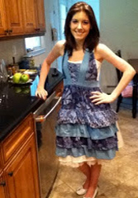

Meet the Buns on the Run Chefs!
Christa
My name is Christa, I'm 24 years old, and I am one half of Buns on the Run. You can usually find me playing video games, reading a book, or cuddling with my cats. Lynn and I have been friends for ages and we have also been cooking together as often as we get. We started Buns on the Run because we wanted to document all of our cooking adventures and laugh at ourselves. We also figured that it would be a good way to get some hints and ideas for cooking techniques and recipes. It's a more interesting way to follow a recipe, and a lot more entertaining than reading one from a book. If you like sweets, dry humor, corny jokes, and all the fandoms, I'm sure that we'll all become fast friends through the interwebs. Cook dangerously, laugh often, and may the odds be ever in your favor, internet friends!
Lynn
My name is Lynn, I’m also 24 years old and I’m the other half of Buns on the Run. I have three dogs and an array of stray cats that I talk to, in public, while avoiding human contact as much as possible. Christa and I met in elementary school and became best friends for life. We share the same interests such as baking (obviously), reading, writing, video gaming, obsessing over things like Harry Potter, Doctor Who and Lord of the Rings, and just being completely random goofballs. We’ve been getting up to little shenanigans together since about the age of 11 and in 2011 we decided to start recording them and sharing them with the world. We came up with a fun and accurate name, Buns on the Run, and created a blog where we posted step-by-step instructions (and what not to do’s) for each recipe we recreated. We do this because it’s what we love, spending time with good friends while making good food and sharing it with you guys. Always remember that friendship is a gift that cannot be bought…but it can be won over with a batch of homemade cookies! See you soon friends!

Connect